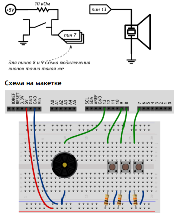

#define BUZZER_PIN 13 // пин с пищалкой (англ. «buzzer»)
#define FIRST_KEY_PIN 7 // первый пин с клавишей (англ. «key»)
#define KEY_COUNT 3 // общее количество клавиш
void setup()
{
pinMode(BUZZER_PIN, OUTPUT);
}
void loop()
{
// в цикле бежим по всем номерам кнопок от 0-го по 2-й
for (int i = 0; i < KEY_COUNT; ++i) {
// на основе номера кнопки вычисляем номер её пина
int keyPin = i + FIRST_KEY_PIN;
// считываем значение с кнопки. Возможны всего 2 варианта:
// * высокий сигнал, 5 вольт, истина — кнопка отпущена
// * низкий сигнал, земля, ложь — кнопка зажата
boolean keyUp = digitalRead(keyPin);
// проверяем условие «если не кнопка отпущена». Знак «!»
// перед булевой переменной означает отрицание, т.е. «не».
if (!keyUp) {
// рассчитываем высоту ноты в герцах в зависимости от
// клавиши, которую рассматриваем на данном этапе цикла.
// Мы получим значение 3500, 4000 или 4500
int frequency = 3500 + i * 500;
// Заставляем пищалку пищать с нужной частотой в течение
// 20 миллисекунд. Если клавиша останется зажатой, пищалка
// вновь зазвучит при следующем проходе loop, а мы услышим
// непрерывный звук
tone(BUZZER_PIN, frequency, 20);
}
}
}